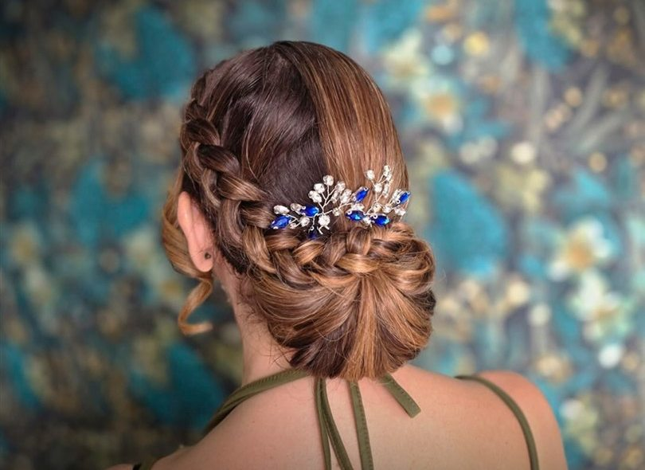
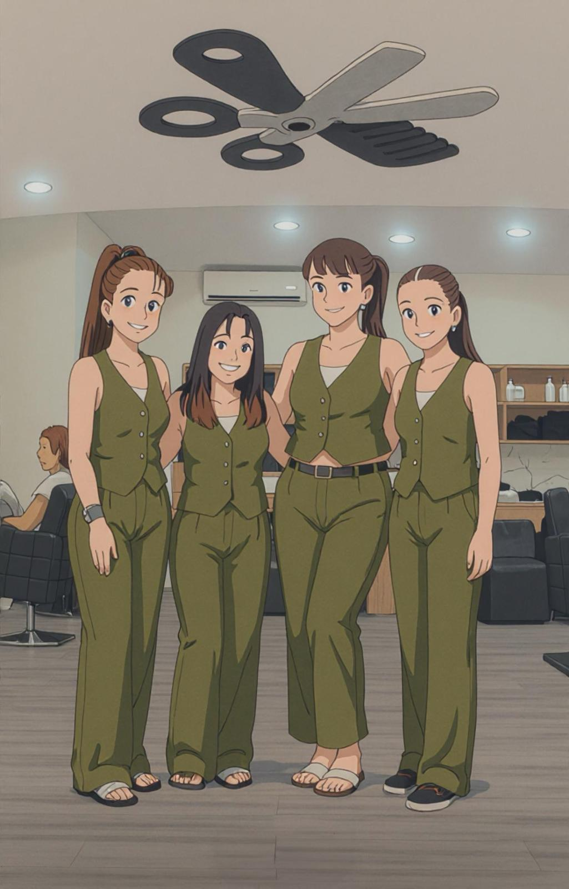
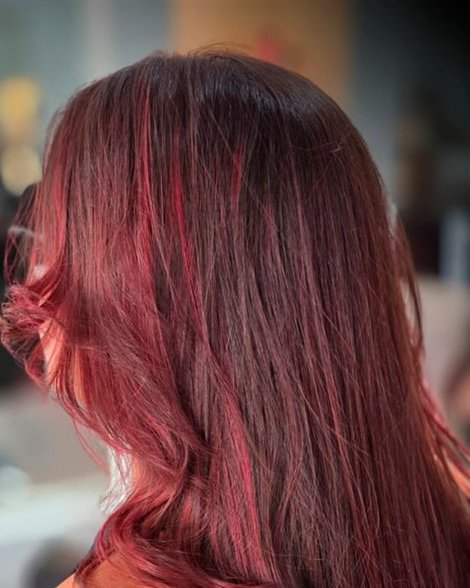
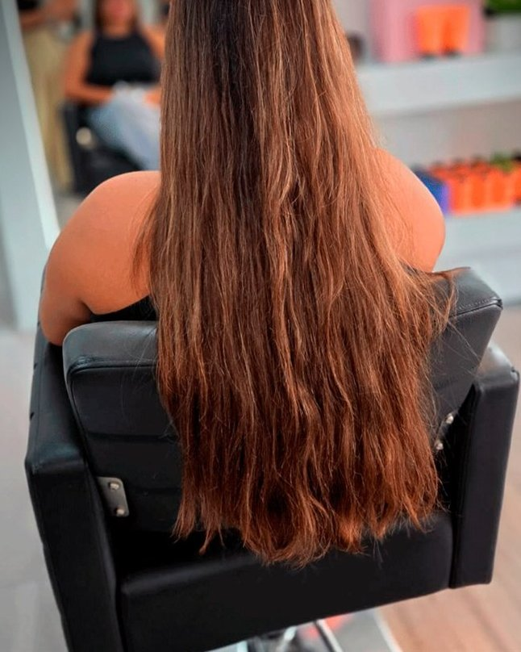
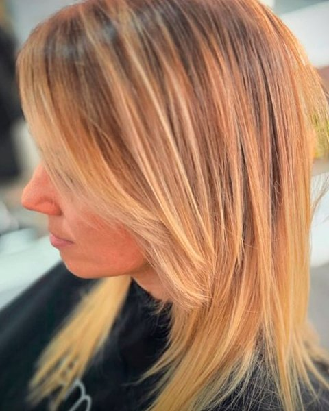
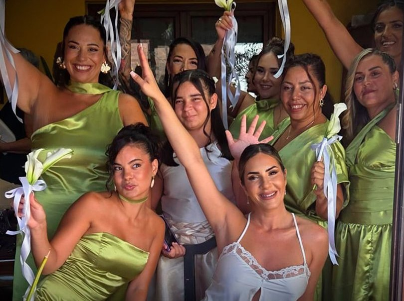
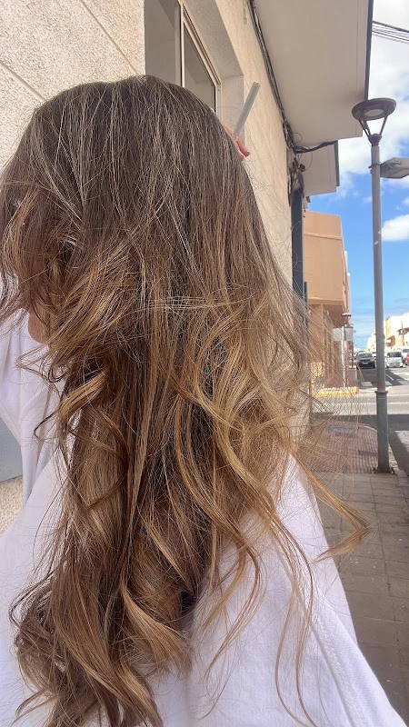
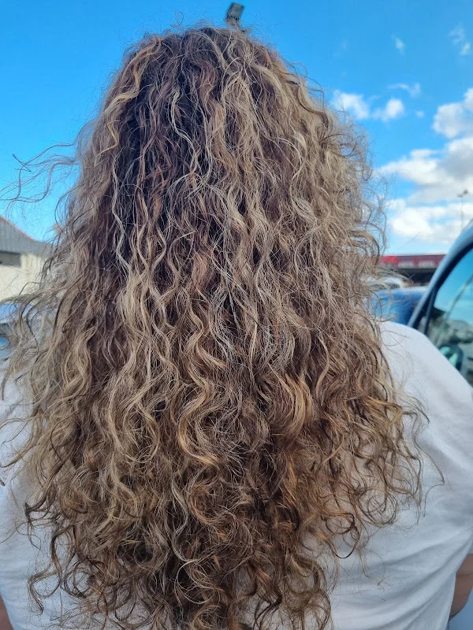
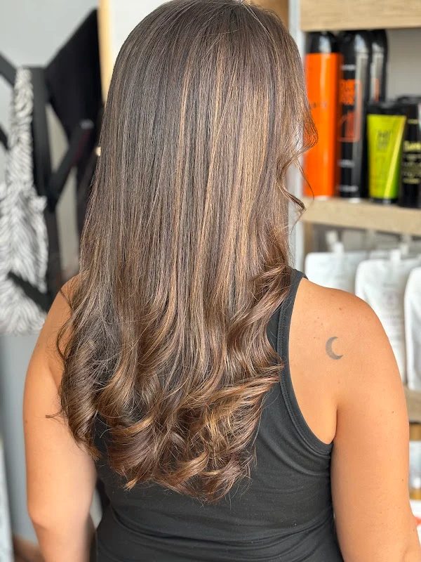
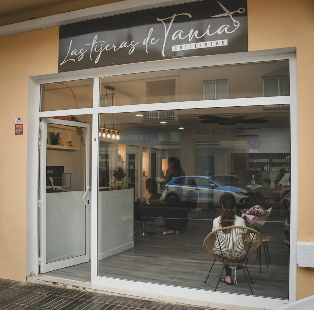

Te aconsejamos
Escuchamos lo que quieres y te decimos con sinceridad qué te va a quedar mejor.
Peluquería · Puerto del Rosario
Color, corte y peinados de novia con un asesoramiento de verdad: te escuchamos, te aconsejamos y cuidamos la salud de tu cabello antes que nada.

Escuchamos lo que quieres y te decimos con sinceridad qué te va a quedar mejor.
La salud de tu pelo va primero: elegimos técnica y producto pensando en cómo quedará en unos meses.
Un salón cercano, donde te reciben por tu nombre y sales con ganas de volver.
Servicios
Te asesoramos según tu tipo de cabello, el resultado que buscas y cómo quieres mantenerlo en casa.
Bob, degradados o un cambio de forma que respete tu textura y sea fácil de peinar en casa.
Babylights, rubios luminosos, reflejos cobrizos y tonos fantasía. Elegimos el matiz contigo.
Ondas, trenzas, semirrecogidos y peinados personalizados para bodas y celebraciones.
¿Quieres que el color te dure o definir tus rizos? Pregúntanos por los productos de cuidado que usamos y recomendamos en el salón.

Quiénes somos
Puede que vengas con una idea clara o solo con ganas de cambiar. Tania y su equipo se toman el tiempo de entender lo que buscas y te aconsejan con paciencia y cariño, aunque a veces eso signifique proponerte algo distinto.
«Iba con una idea de corte, pero ella con paciencia, conocimiento y cariño me aconsejó otro… y la verdad es que de 10».Clienta, reseña en Google
Porfolio
Antes y después
Una melena larga en tonos naturales gana intensidad con reflejos rojizos y un acabado ondulado.
Desliza para comparar.
Ver el cambio en Instagram






Agenda de novias abierta
Recogidos, ondas y trenzas para novias, damas de honor e invitadas. Las fechas de temporada vuelan: cuéntanos tu día y el estilo que sueñas y te reservamos un hueco.
Reseñas
«Saben aconsejarte muy bien y el resultado es genial. Desde que me mudé a Fuerteventura solo voy a Las Tijeras de Tania».
Clienta · Google
«Supieron entender perfectamente lo que quería y el resultado quedó incluso mejor de lo que esperaba».
Clienta · Google
«Trato excepcional y personal, donde te sientes como en casa y siempre atentas».
Clienta · Google
Pedir cita
Al 648 87 78 48 o por WhatsApp. Atendemos de martes a viernes de 09:30 a 19:00.
Qué te quieres hacer, o una foto de referencia. Te orientamos sobre el servicio y el tiempo que necesita.
Calle María Estrada, 19, en Puerto del Rosario. Te esperamos.
Ubicación y citas
| Martes | 09:30–19:00 |
|---|---|
| Miércoles | 09:30–19:00 |
| Jueves | 09:30–19:00 |
| Viernes | 09:30–19:00 |
| Sáb., dom. y lun. | Cerrado |
Entrada accesible para sillas de ruedas
